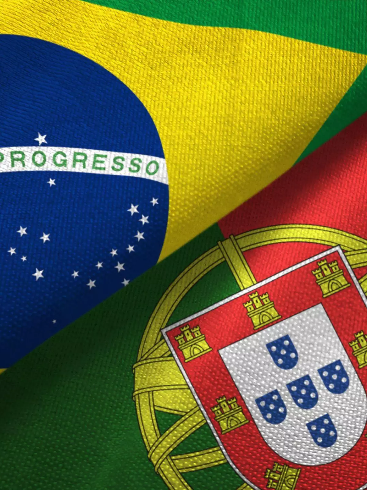

Após 24 anos, novamente campeão
Por:CHEQUEI
Brasil ganha a copa de 2 a 0 da França.
Vou compartilhar apenas a verdade (pelo menos as que eu verifiquei)
Por:CHEQUEI
Brasil ganha a copa de 2 a 0 da França.

Por:CHEQUEI
Cristiano Ronaldo desiste de jogar por Portugal e decide mudar de nacionalidade, ontem se confirmou ser brasileiro, Ancelotti AFIRMA sua convocação para a copa no lugar de Vinicius Jr.